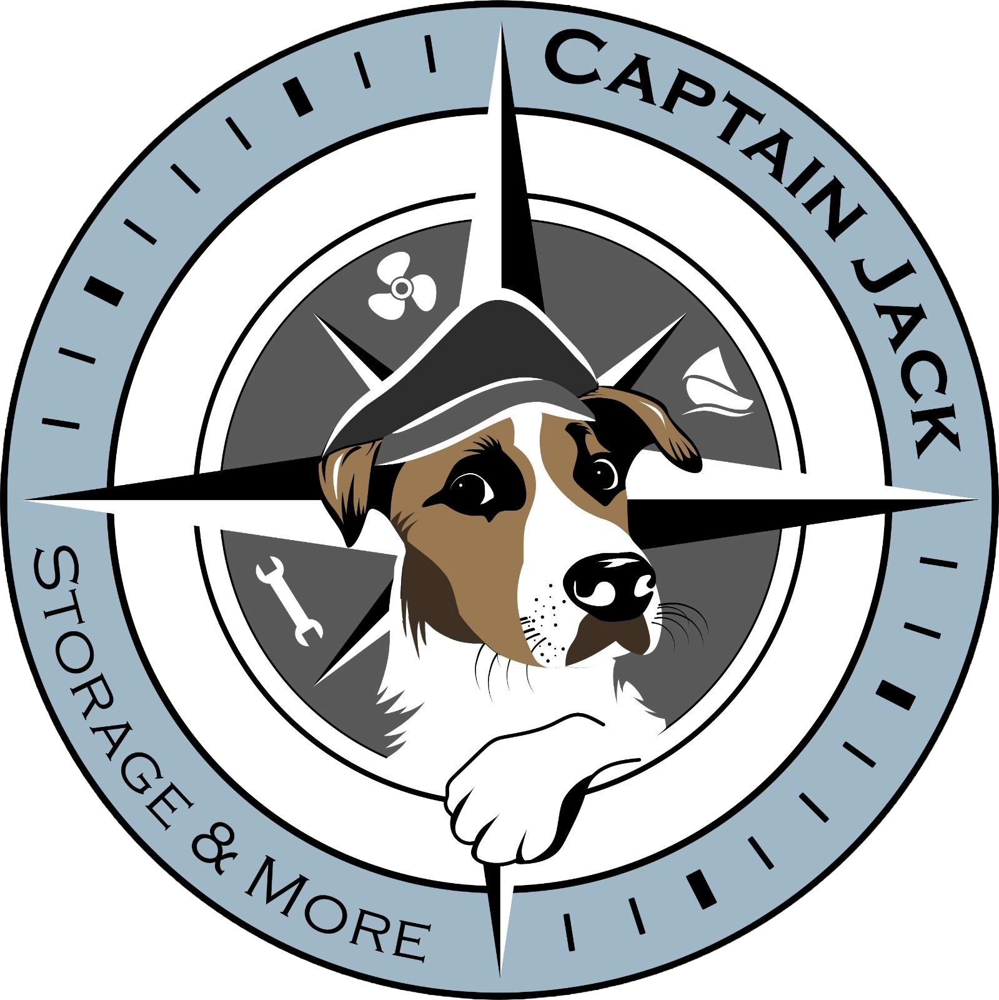

200+ zufriedene Bootsbesitzer
Moderne Bootslagerung und smarter Bootsservice in Preveza
Bootslagerung & Keelcrab® Unterwasserreinigung in Preveza. Ohne Kran, ohne Wartezeit – direkt im Wasser.
Exklusive Keelcrab®-Technologie in Griechenland
